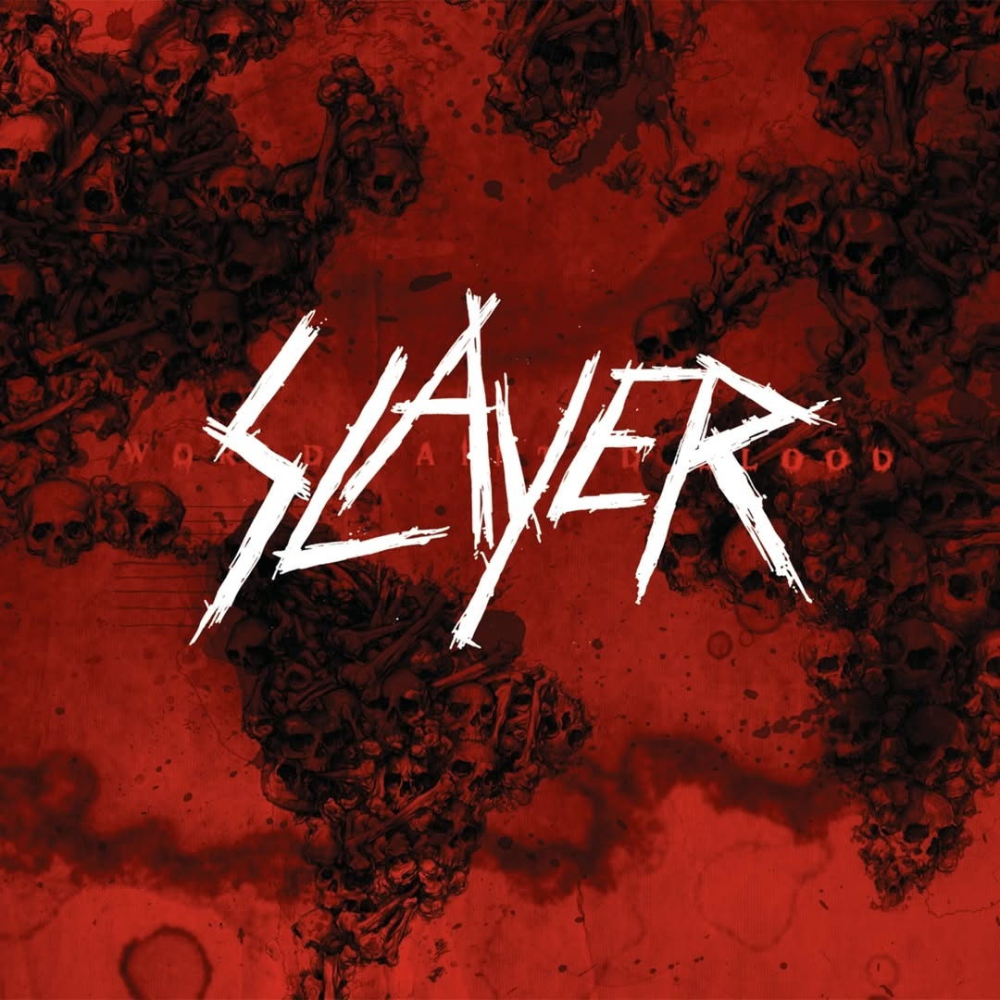
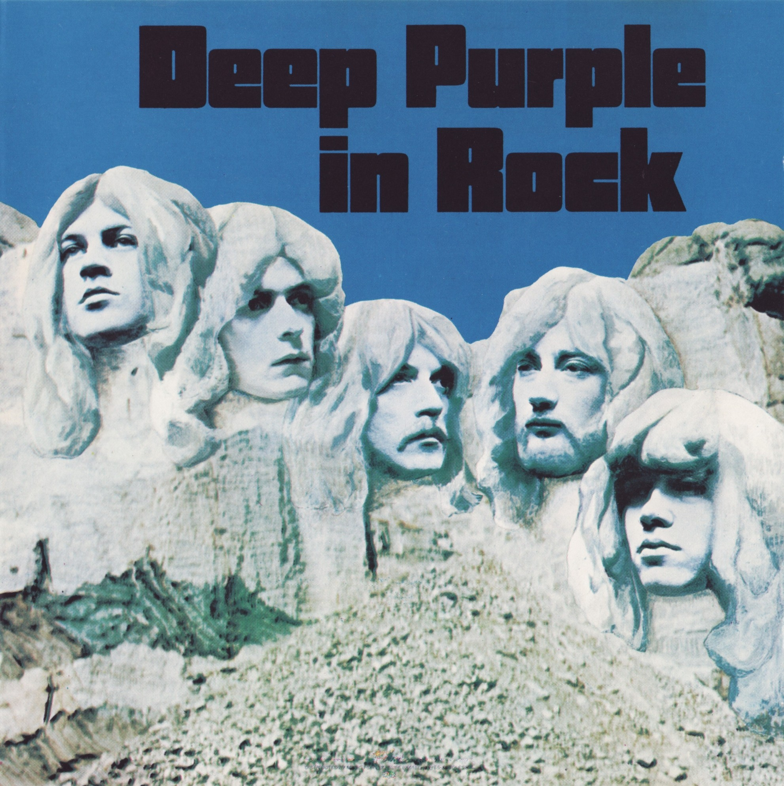

Willkommen bei unserer Musikwebseite
Entdecken Sie die Welt der Musik!
Musikrichtungen
Hier stellen wir verschiedene Musikrichtungen vor.
Musikfestivals
Hier wartet jede menge Spaß auf Euch.
| Festival | Genre |
|---|---|
| Rock am Ring/Rock im Park | Rock, Metal |
| Hurricane/Southside Festival | Indi, Pop, Rap |
| Wacken Open Air | Heavy-Metal |
| Splash! Festival | Hip-Hop, Rap |
Streaming-Dienste
Die besten Musikstreaming-Dienste.
| Dienst | Inhalt |
|---|---|
| YouTube Music | Musikvideos |
| Spotify | Songs MP3 |
| Amazon Music | Musikvideos |
Künstler
Einige unserer Lieblingskünstler.
| Künstler | Genre |
|---|---|
| Ed Sheeran | Pop |
| Metallica | Rock |
| Slipknot | Metal |
| Carl Cox | Techno |
Instrumente
Instrumente, die in der Musik eine große Rolle spielen.
Lieblingslieder
Unsere Lieblingssongs – klickbar!
Bilder


Musik Tabelle
| Genre | Beispiel |
|---|---|
| Rock | z.B. Metallica, Scorpions ... |
| Pop | z.B. Ed Sheeran, Taylor Swift ... |
| Jazz | z.B. Miles Davis, John Coltrane ... |
| Techno | z.B. Carl Cox, Richie Hawtin ... |
| Klassik | z.B. Bach, Beethoven ... |
Kontakt
Schreiben Sie uns eine Nachricht!
Zurück zum Start